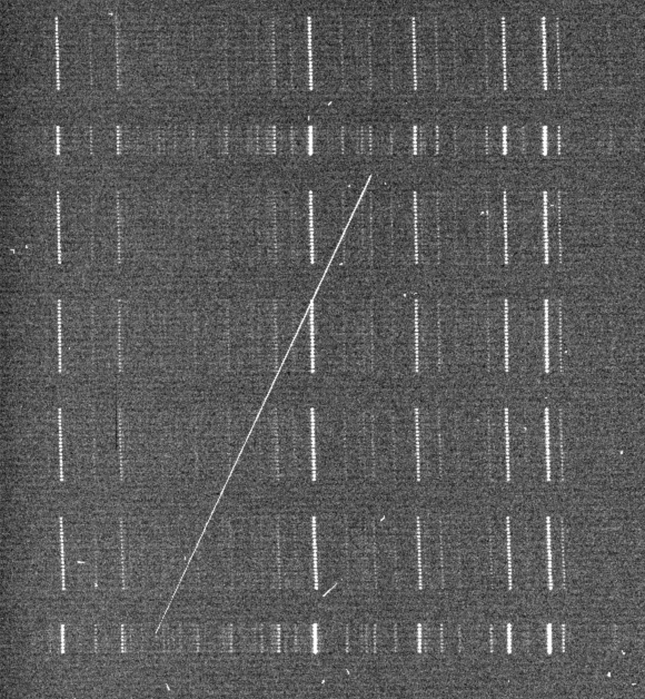

Overview
PypeIt (pronounced “pipe it”) is a Python package for semi-automated processing and reduction of optical / near-IR spectroscopic data. Designed as a general-purpose pipeline, it currently supports ~50 spectrographs on ~18 telescopes. Its algorithms build on decades of development from earlier pipelines to produce robust, science-grade data products.
With version 2.0, PypeIt has entered a more mature stage of development: a codified governance structure, a better-defined software versioning system, and a more consistent release schedule. Ongoing efforts — aided by an award from the NSF Pathways to Enable Open-Source Ecosystems (POSE) program — work more closely with supported facilities to improve reliability and performance.
PypeIt Across the Globe

Community & Impact

Development & Roadmap
Broad goals: support more modes & spectrographs; richer interaction with and interrogation of outputs; greater modularization of core methods; and better support for cloud computing and archiving of reduced data products.
Current release — 2.0.1
- Dependency updates
- Run individual calibration steps (useful for testing)
- Improved 1D spectrum viewer
- Various bug fixes
Upcoming — 2.1.X
- Low-level code refactoring
- Run sky-subtraction and extraction steps separately
- MMT Binospec IFU support; improved Binospec reductions
- Various bug fixes
Why PypeIt?
- Open source — free as in beer and openly developed.
- Built on the widely-used scientific Python software stack.
- Community-developed & supported: functionality updates immediately benefit every supported spectrograph; twice-yearly user workshops.
- Robust noise modeling and photon-limited sky subtraction.
- Builds on decades of algorithmic development from legacy pipelines.
PypeIt at the MMTO
- Blue Channel — long-slit; wavelength-calibration templates for the usable range of all gratings.
- Binospec — long-slit, MOS, and IFU (under construction); wavecal templates for all gratings; currently raw-data only, with processed-data support planned.
- MMIRS — long-slit, MOS; needs MOS test data and more coverage for some grism/filter combinations.

Spotlight: Binospec IFU
From detector to science — a Binospec IFU datacube of a JADES field:


Get Started
pip install pypeit

pypeit.readthedocs.io

Users Slack